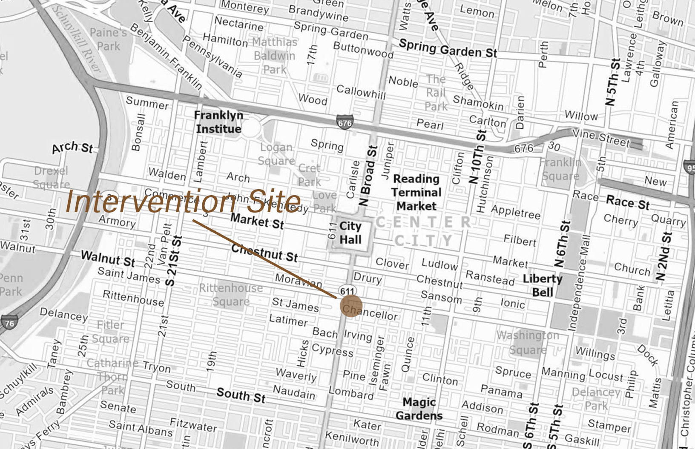
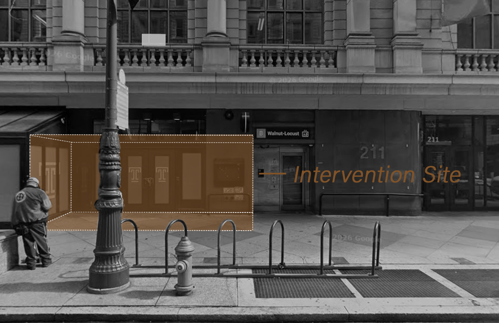
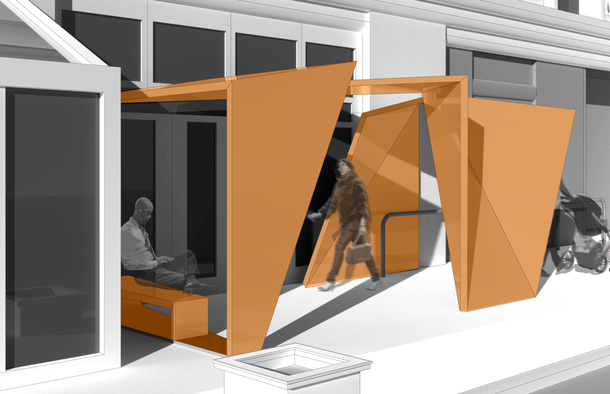
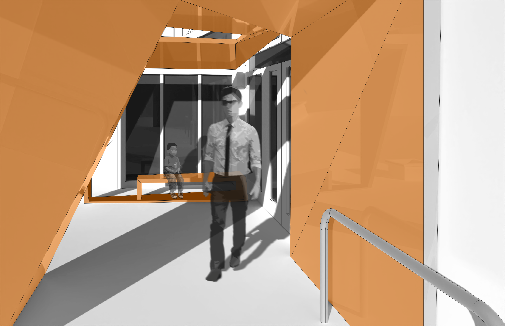
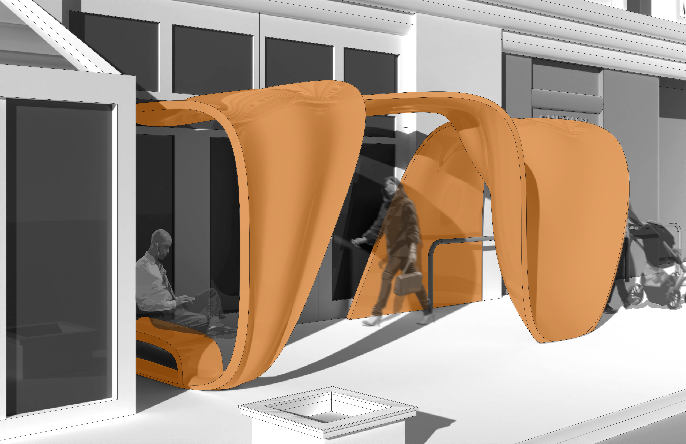
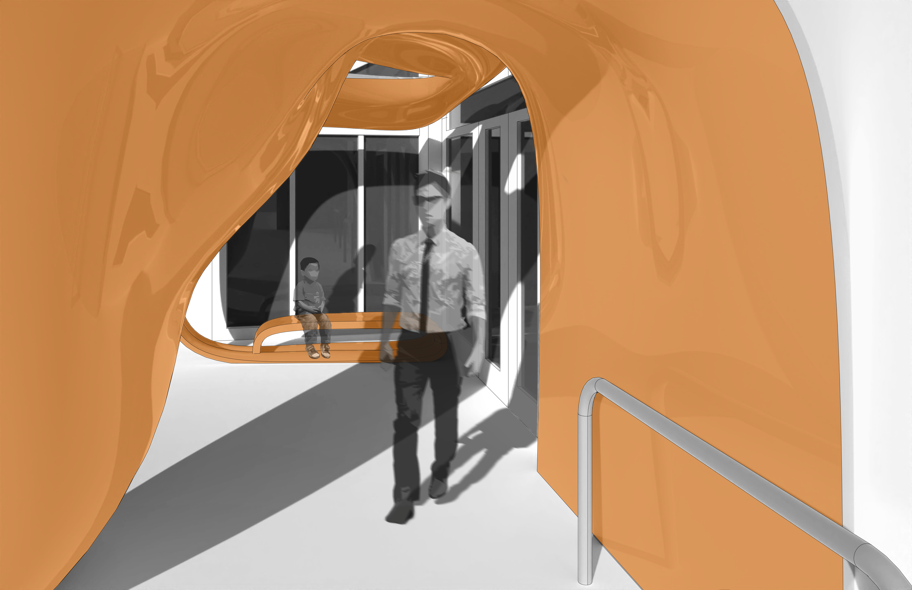

Broad Street Corridor Intervention
This project aims to investigate the relationship between curved architecture and stress, through the use of empirical research. My group initially claimed that curved designs would reduce stress more than angular ones.
To test this hypothesis, we designed two entrance thresholds, identical in every way except that one was curved and the other angular. The next step was bringing these designs into virtual reality where we tested the reaction of people in each iteration.
The project was selected to be presented at the 2026 Society for Neuroscience of Creativity Conference.
The Site
Analysis of existing conditions, urban density, and site constraints.

Site Map

Site 'Elevation'
Our Intervention
Analysis of existing conditions, urban density, and site constraints.


Angular Iteration


Curvilinear Iteration